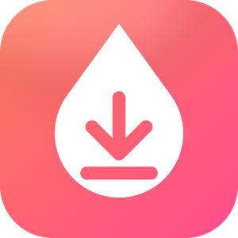

Dropfetch
Paste a link to save a video. Drop a file to convert it.
No ads. Nothing uploaded. All on your PC.
Save from a linkTikTok, Instagram, X, Facebook, Reddit, Vimeo and hundreds more. Video up to 1080p or audio as MP3/M4A/WAV/FLAC. Playlists, subtitles, clips.
Quick convertHEIC → JPG, MOV → MP4, video → GIF or MP3, WAV → FLAC. Trim, rotate, mute, presets. Originals are never touched.
Built to keep workingAutomatic retries, stall detection, crash-safe resume and a self-updating engine.
Private by designNo account, no analytics. Downloads go straight from the site to your PC.